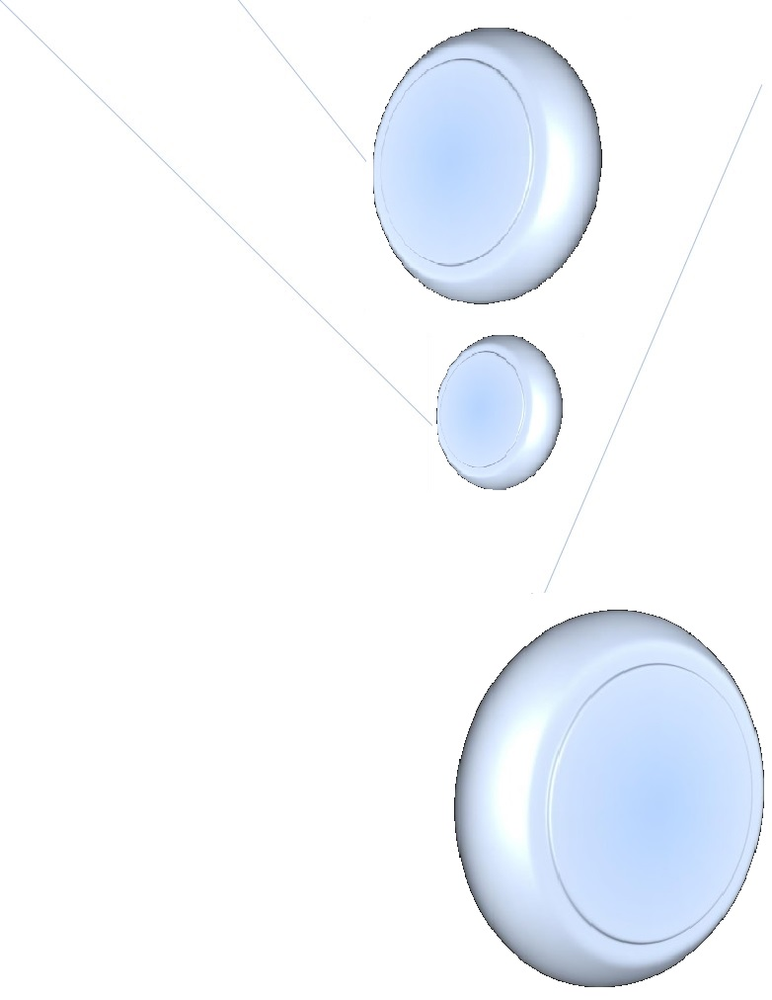
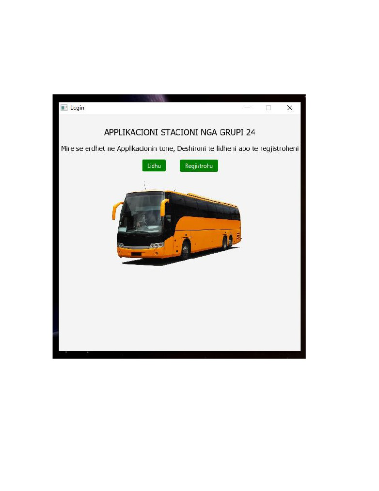
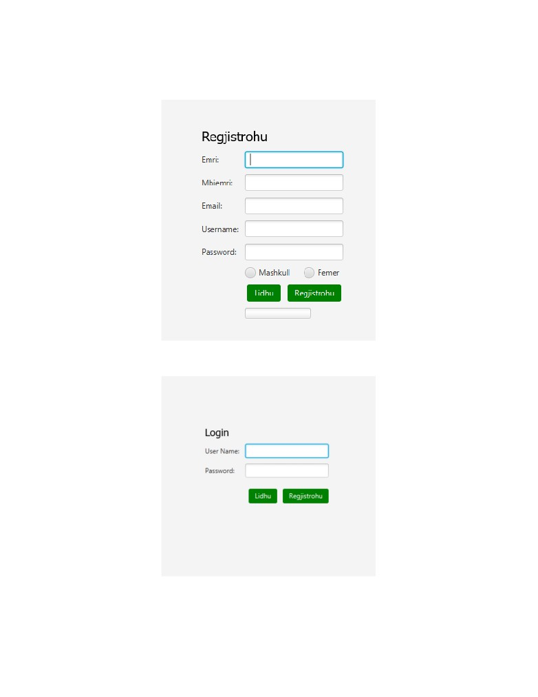
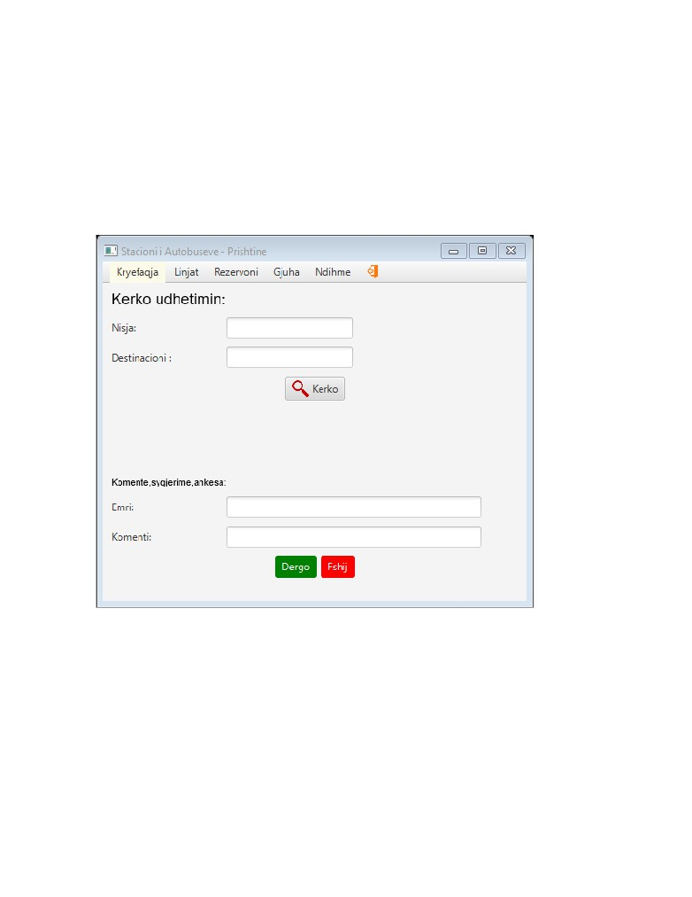
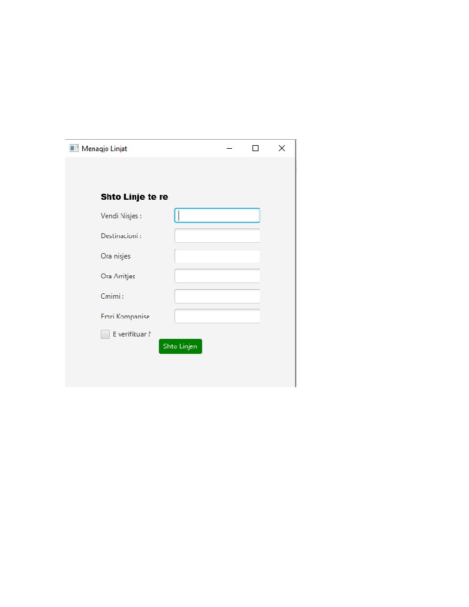
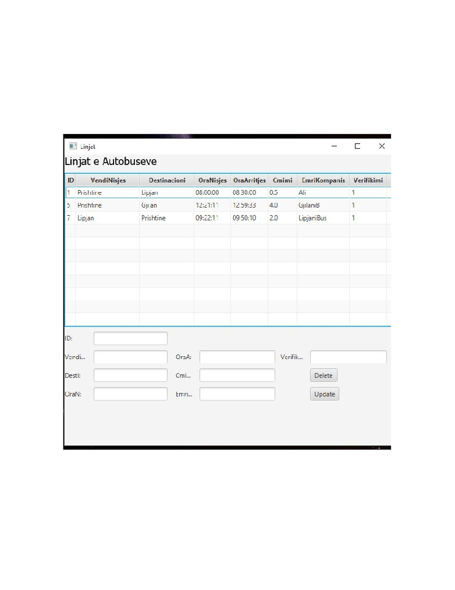
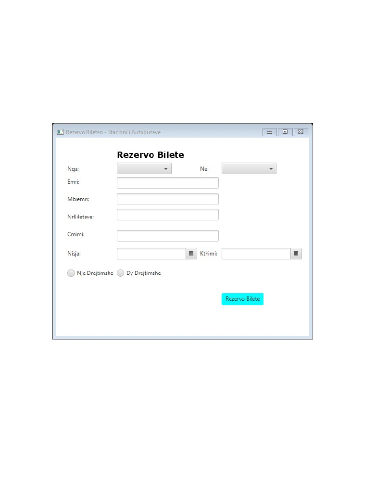
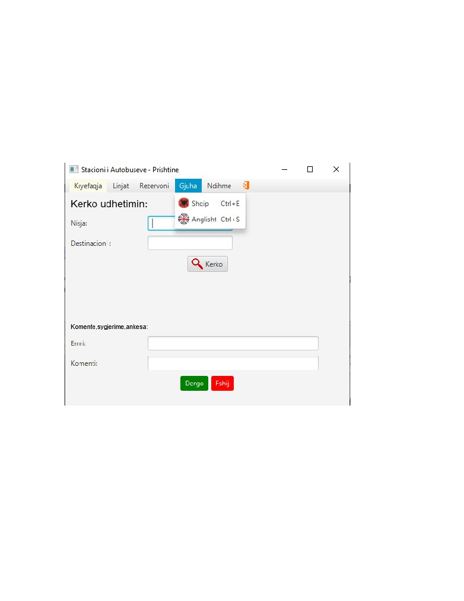
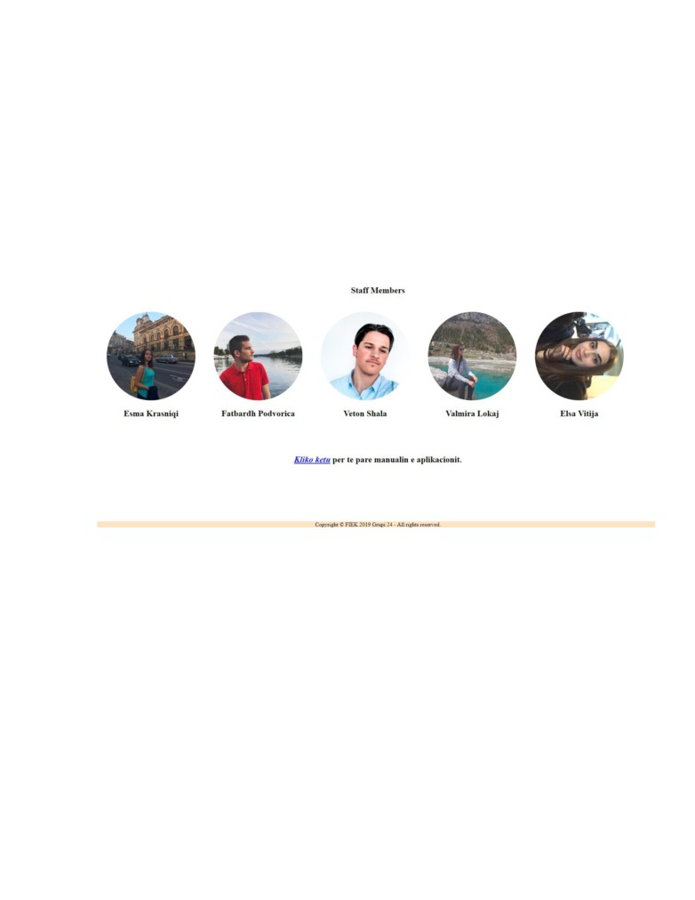
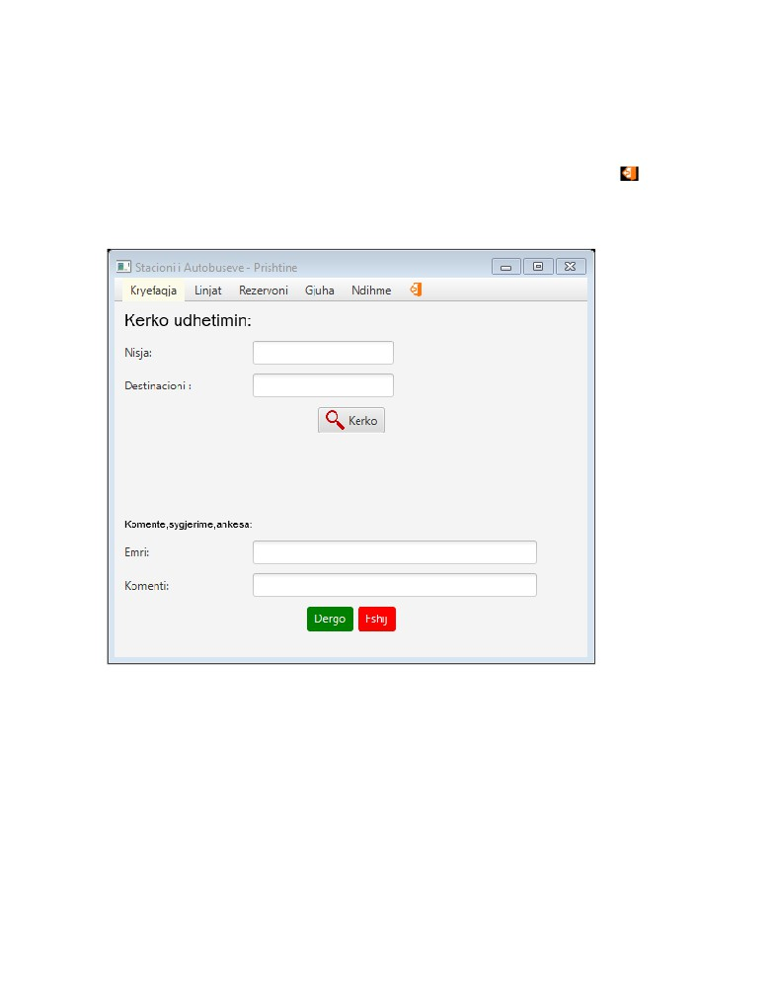

NDIHMË
Broshurë Elektronike rreth Aplikacionit - Stacioni I Autobuseve
Përmbajtja
Faqja kryesore
3
Faqja e parë
5
Shto linje
6
Transkripta e linjave
7
Rezervo biletën
8
Ndërroni gjuhën
9
Informacion
10
Çkyqu
11

Faqja kryesore
Sapo të hapni aplikacionin tone do te shfaqet pamja si ne vijim:

Ne këtë faqe ju keni mundësi të regjistroheni për herë të parë apo edhe te kyceni.
Kur të dhënat tuaja të jënë të gatshme per procesim, shiriti I statusit do të marr pamje të
kaltër.

Faqja e parë
Ky kërkim realizohet përmes kornizës Kërko, ku mund të kërkohet varësisht faktit
se informatat janë të mangëta, çoftë për vendin e nisjes apo destinacionin.
Ndërsa më poshtë keni mundesine të vlerësoni punën tonë.

Shto linje
Nëse jeni kompani që posedoni autobusë, ju këni mundësi të regjistroni linjën tuaj duke
plotësuar të dhënat e mëposhtme.

Transkripta e linjave
Personave të autorizuar ju lejohet të menaxhojnë linjat e regjistruara, me mundësi të
shumta si ndryshimi I të dhënave dhe fshirja e tyre.

Rezervo biletën
Për të shfaqur dritaren e Rezervimeve të biletës, zgjedhni opsionin Rezervo bileten e
menysë rënëse Rezervoni apo me kompinimin e tasteve CTRL +B.
Kërkimi I qyteteve realizohet përmes listave rënëse të vendit te nisjes dhe destinacionim.
Ky kërkim mundësohet për qytetet të cilët janë në dispozicion.

Ndërroni gjuhën
Aplikacioni ynë ju ofron mundësinë e përdorimit të tij në dy gjuhë të ndryshme, Shqip dhe
Anglisht.
Ky konfigurim mund të bëhet me anë të opsioneve që gjenden në menynë rënëse Gjuha apo
me kombinimin e tasteve CTRL+E për Shqip, dhe CTRL+S për Anglisht

Informacion
Informacioni, përfshirë edhe këtë broshurë mund të gjenden në opsionin Rreth Nesh të
menynë rënëse Ndihmë.

Çkyqu
Pasi të keni rezervuar bileten dhe të keni shfrytëzuar shërbimet tona, përmes ikonës
mund të ç’kyqeni, por na vizitoni prapë!